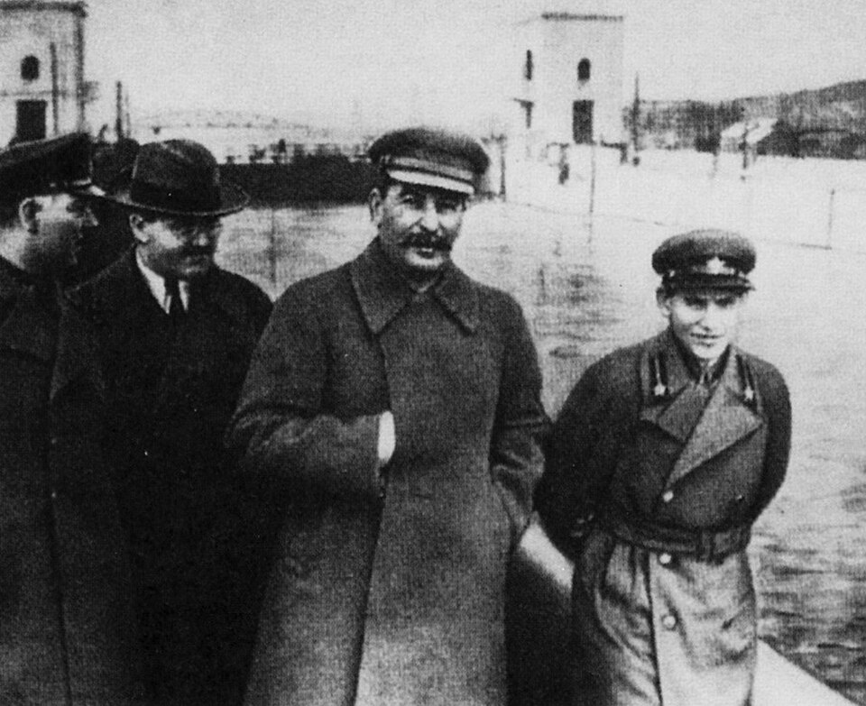

O mundo do livro
Três blocos em guerra para sempre

Em 1984, o mundo está dividido em três superestados: Oceânia, Eurásia e Lestásia. Eles vivem em guerra permanente — não para vencer, mas para manter a população com medo e ocupada.
Orwell se inspirou na Conferência de Teerã (1943), em que os aliados começaram a dividir o mundo em zonas de influência. Também pensou no Pacto Molotov-Ribbentrop (1939), quando inimigos viraram aliados da noite para o dia.
«O livro pretende discutir as implicações de dividir o mundo em zonas de influência.»Orwell, carta de 1948
Livro ↔ História
O Grande Irmão se parece com Stalin
«O Grande Irmão está vigiando você.»1984, parte 1, capítulo 1
No livro, o Grande Irmão é o líder que tudo vê e que nunca erra. Na URSS, Stalin construiu uma imagem parecida: retratos em prédios, jornais e desfiles, sempre como o “guia infalível” do povo.
Um rosto onipresente, protegido por um culto ao líder.
Stalin e Hitler usaram retratos, rádio e comícios para criar líderes “acima de todos”.
Fontes: propaganda stalinista dos anos 1930; Constituição soviética de 1936.

Livro ↔ História
Goldstein é o inimigo que precisa existir
Em 1984, Emmanuel Goldstein é o inimigo público nº 1. Toda falha do Partido é culpa dele.
Na URSS, esse papel foi dado a Leon Trotsky. Ele havia sido aliado de Lênin, mas perdeu a disputa para Stalin, foi expulso do Partido em 1927 e exilado em 1929.
Em 1940, Trotsky foi assassinado no México por um agente soviético. Depois disso, foi apagado de fotos, livros e da história oficial.
Goldstein é culpado de tudo e autor de um livro proibido.
Trotsky virou o “traidor” oficial e foi eliminado da memória pública.

Livro ↔ História
Winston muda o passado. A URSS fazia igual.
«Quem controla o passado controla o futuro; quem controla o presente controla o passado.»1984, parte 1, capítulo 3
O trabalho de Winston é reescrever jornais e fotos para que o Partido pareça sempre certo. Na URSS, censores faziam o mesmo com fotos e livros: inimigos do regime eram apagados das imagens.


Fonte: David King, O Comissário Desaparece (1997). Imagens de domínio público.
Livro ↔ História
Ódio coletivo todos os dias
Em 1984, os cidadãos precisam assistir aos Dois Minutos de Ódio: um momento diário para gritar contra o inimigo do Partido.
Na Alemanha nazista e na Itália fascista, comícios e desfiles cumpriam essa função. Multidões ouviam discursos, cantavam hinos e gritavam contra inimigos escolhidos pelo governo.
Emoção em grupo, todos os dias, contra o mesmo inimigo.
Comícios de massa e propaganda pelo rádio criavam a mesma emoção coletiva.
Exemplos: comícios de Nuremberg (Alemanha) e discursos de Mussolini (Itália).